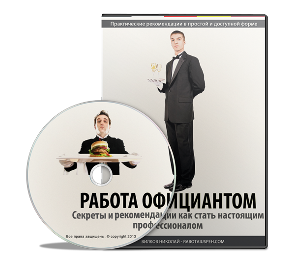

Добрый день!
Меня зовут Николай Вилков!
Я с 1996 года работаю официантом,за 17 лет работы приобрел огромный опыт, которым хочу поделиться с Вами.
Когда я начинал работать официантом, то длительное время искал различные курсы, ездил по библиотекам, книжным рынкам в поисках информации.
После длительных поисков толковых фильмов, книг, методических пособий, видео-курсов о том, как научится профессии официанта я понял - на просторах Рунета их практически нет!
Вся литература, которую я находил, предназначена для руководителей или учредителей ресторана, иногда для поваров.
Пишут эти книги в основном люди, далекие от профессии официанта, они рассказывают о том, как открыть ресторан, набрать персонал, повысить продажи, организовать акции, обучить персонал и так далее. Это обычные маркетологи, критики, рестораторы, копирайтеры, литераторы, но не практики.
За годы работы официантом я научился многим вещам, получил бесценный опыт по обслуживанию на мероприятиях самого высокого уровня. В числе приглашенных были президенты государств, губернаторы, мэры,министры, олигархи, главы различных силовых и религиозных ведомств, известные ведущие, бизнесмены и артисты.
Чему я хочу Вас научить в данном курсе
Правильно общаться с гостями, находить с ними общий язык, избегать конфликтных ситуаций
Систематизировать полученные знания, как запоминать и правильно применять их на практике
Организовать работу на крупных обслуживаниях, работать на банкетах, фуршетах, выездных мероприятиях
Разбираться в алкогольных напитках, их классификациях и ассортименте
Правильно встречать гостей, принимать заказ, обслуживать, уделить внимание и получать за это хорошее вознаграждение
Основным правилам по обслуживанию гостей, правилам этикета
Заслужить уважение в коллективе среди коллег по работе
Получать хорошие чаевые, используя знания, изложенные в курсе
Найти для себя рабочее место, на котором вам будет комфортно, получать большую зарплату, заниматься в жизни любимым делом

Только честные методы работы, советы и рекомендации для официантов простым доступным языком
Если вставить диск в дисковод
Перед вами откроется красивое навигационное меню:

В данном видео-курсе "Работа официантом" представлены 10 уроков, введение и заключение, в общей сложности продолжительностью 280 минут (4 часа и 40 минут)
Урок 1 "Меню ресторана"
Принципы и правила построения меню во всех ресторанах
Как легко выучить меню в новом заведении?
Как незаметно использовать шпаргалки в первые дни работы?
Кто поможет вам быстро выучить меню в ресторане?
Найти для себя рабочее место, на котором вам будет комфортно, получать большую зарплату, заниматься в жизни любимым делом
Урок 2 "Основы сервировки"
Основная посуда и стекло в ресторане, используемые для сервировки
Столовые приборы основные и вспомогательные
Столовое бельё, предназначение и правила сервировки
Урок 3 "Встреча гостей, приём заказа"
Когда у гостей ресторана складывается первое впечатление об официанте?
Как правильно встретить гостей и какие вопросы задать, чтобы отдых в вашем ресторане запомнился с хорошей стороны
Какие закуски и блюда рекомендовать новым гостям, какие постоянным посетителям?
С кого из гостей начинать прием заказа, что необходимо уточнять, как правильно составить план для приема заказа у компании?
Для чего гостям необходимо повторить их заказ?
Урок 4 "Основные правила обслуживания гостей"
Как правильно передать заказ на бар и кухню?
Как правильно подать блюда Вашим гостям, в какой последовательности?
Как правильно наблюдать за гостями во время обслуживания?
Как правильно подать счет гостям?
Как правильно проводить гостей после обслуживания?
Урок 5 "Обслуживание банкетов"
Из каких этапов состоит банкет?
Особенности сервировки на банкетах
Подготовка подсобного стола, для чего это нужно?
Для чего необходимо досконально знать меню перед банкетом?
Как правильно расставить закуски на стол перед банкетом, в каком порядке?
Особенности работы официанта на банкете
Урок 6 "Обслуживание фуршетов и кейтеринг "
Особенности фуршетов, основные этапы подготовки
Отличие сервировки стола на фуршете и особенности обслуживания
Плюсы и минусы обслуживания фуршетов
Что необходимо уточнить перед тем, как согласиться на выездное обслуживание?
Как правильно выбрать стол на выездном обслуживании?
Как заработать хорошие чаевые, основные секреты
Стоит ли принимать алкоголь во время работы официанту?
Чему вы научитесь на выездных мероприятиях, почему важно на них ездить?
Урок 7 "Основные правила официанта"
Почему важно следить за внешним видом и одеждой официанту?
Как правильно купить обувь для работы, что необходимо учесть?
Правила при общении с гостями в ресторане
Основные правила, касающиеся обслуживания гостей
Урок 8 "Правила этикета"
Что такое этикет, почему правила этикета официанту необходимо досконально знать?
Какие приборы использовать для различных закусок, когда приборы не используют?
Что служит официанту сигналом "можно заменить тарелку"?
Кому из гостей необходимо уделить больше внимания за столом?
Что официанту нельзя делать в зале ресторана?
Урок 9 "Постоянные и проблемные гости"
Почему при обслуживании постоянных гостей необходима максимальная концентрация?
Как удивить вашего постоянного гостя?
На какие темы не желательно общаться с гостями?
Типичные спорные ситуации с гостями и возможные пути их решения
Кто и как может помочь официанту в случае с проблемными гостями
Урок 10 "Хорошая атмосфера в коллективе"
Как поднять свой авторитет в коллективе?
Как отстаивать свои права на работе?
Как правильно уволиться с работы?
Можно ли быть честным, работая официантом?
Вот коротко о том, что вы узнаете из каждого урока и чему научит вас данный видео-курс
Сколько стоит мой видео-курс?
Цена курса чисто символическая и составляет всего 900 рублей
Как правило, если курс достается человеку бесплатно, то он лежит и пылится на полке длительное время
Если вы его купили за деньги, то шансов на изучение в десятки раз больше
Любой официант может заработать на мой курс за одну смену, согласитесь
Так что выбор за вами
Вы хотите изучить полезную информацию, которая поможет вам найти работу в престижном ресторане?
Тогда переходите ниже, оплатите курс и изучайте
Оплатить курс
^ Наверх